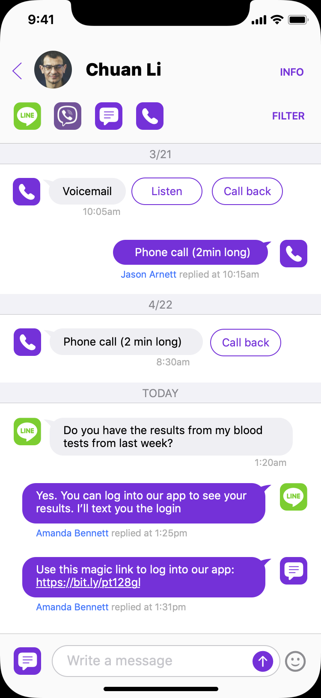
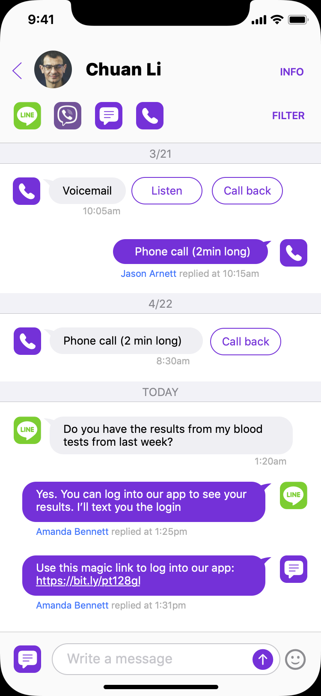
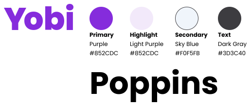
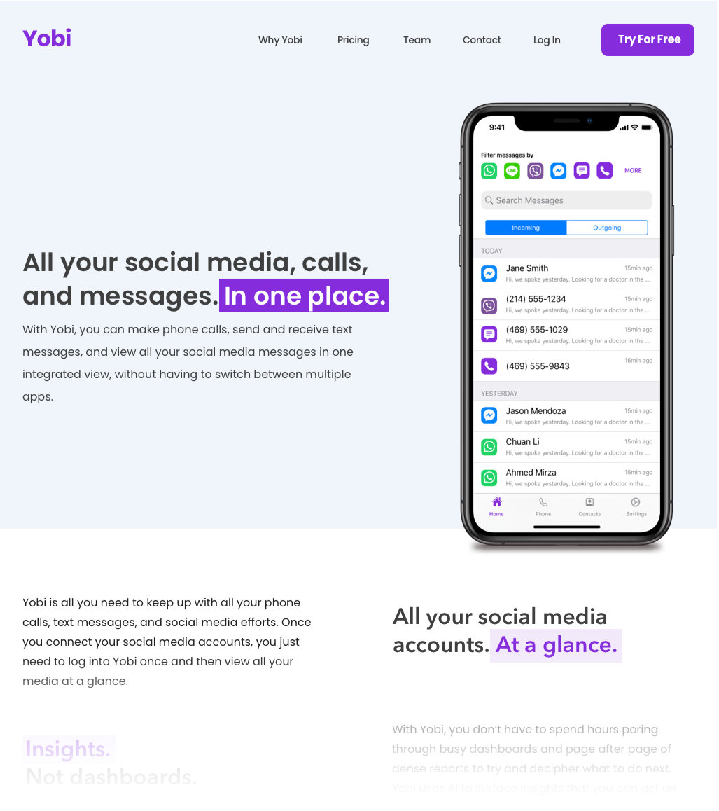

Yobi
But first,
they’re going
to need funding
Back in 2019, Yobi was just an idea. Silicon Valley is overflowing with incredibly brilliant and hard-working entrepreneurs working on the next big idea. To scale their ideas into million (and billion) dollar companies they need funding from venture capitalists and other investors so they can build a team and start growing.
Yobi’s founder, Ahmed Reza, was candid about the problem: to secure much needed investment, the product design and the pitch had to look amazing. That’s where I came in.
Discovery
Ahmed was a serial startup founder. He had founded and worked on a handful of other startups targeted at small business owners, including Call Sumo and New Patients Inc. So when he started Yobi, he already had an idea of the persona he was targeting.
Ahmed's previous users were doctors, dentists, and other types of small businesses owners that worked out of offices. They typically had desktop computers and used social media apps like Facebook, WhatsApp, and Twitter, and Google ads to attract customers. We used this as our initial persona for the first version of the Yobi UI.
Scenario
Imagine that you're a small business owner using the Yobi app. A customer calls your office. Somebody answers the phone and takes down some notes. The next time the customer calls, another person might answer the phone. If the business owner advertises different phone numbers in different social media ads, traditionally, there was no way to combine all those conversations that the customer had from those various phone numbers with different representatives of the business. The end result would have been a frustrated customer as notes got lost and the customer had to repeat the same information over and over again.
Yobi solves all of that. It uses proprietary technology to seamlessly combine all these various conversations from various sources (different phone numbers, text messages, social media, apps like Viber, Facebook Messenger, WhatsApp, etc.) into a single threaded view for each customer.
The first iteration.
The first idea for Yobi was a desktop or web app. I was able to use my experience designing intuitive UIs for complex enterprise apps to take the founder's idea and turn it into a first step.
At this point, I hadn't finalized the color palette yet. I experimented with a variety of colors but couldn't settle on any particular palette. I eventually switched to a grayscale palette so I could focus on the interface instead of the visual design.
The future is
mobile first.
As we continued to explore how users would use the app, I referenced some user research I had done over the previous year or so. The world is going mobile first. Most Gen Z and Millennial users are going to spend to spend their time on mobile devices instead of desktops. So we switched from desktop to mobile.
 

Onboarding has to be dead simple.
For Yobi to succeed, the onboarding experience has to be as easy as possible. To do so, I had to match the onboarding experience as closely as possible with what user's were already used to with similar apps.
Ahmed, Yobi's founder, wanted Yobi to eventually integrated with apps like WhatsApp, Line, Messenger, and Viber. I did extensive research into the apps mentioned previously, including downloading them and going their onboarding experiences and taking screenshots to do a side by side comparison. I then designed the Yobi onboarding screens to match as closely as possible with the experience of the previous apps.
Next, we need a brand identity.
And a website.
In my experience, a seamless brand experience is key in helping people remember your product. For Yobi, The brand had to be polished so they could create an incredible pitch deck and rise above the other startup pitches. In addition, the founders wanted to get early adopters interested in the product and start signing up.
When deciding on the brand color for Yobi, the word that came to mind when I thought about the Yobi experience was "magical". There wasn't anything else like Yobi out there. So I wanted to use joyful purple as the primary/brand color to convey that sense of magic that I felt when Ahmed described his vision for the product. I complimented that with a sky blue secondary color that would complement but not overwhelm the brand color.
For the font, I chose Poppins. Poppins is a geometric font, with a very friendly, welcoming feel. While Poppins has become overused in the last few years, it was still a very new and fresh font when I used it for the Yobi brand.
With the brand colors out of the way, it was time to design an interim logo, and the branding guidelines. I then used the branding guidelines to design the website, and completely redesign the pitch deck that Ahmed had originally put together.
And ... Profit?
Ahmed took the newly designed pitch deck with my new product designs to a pitch meeting for seed stage startups looking for funding and made his presentation. His presentation was a success. After the meeting was over, he was approached by a pair of investors who wanted to buy the product. Ahmed was blown away. People wanted to buy his product already, and he hadn't even started building it yet, just on the value of the design alone! That was the impetus that Ahmed needed to start scaling up his operation.
I've continued to work with Yobi as an unpaid product advisor, helping them build a design system, design the initial product screens, and provide feedback on the Gen AI tools that came out in 2022, including ChatGPT 3.5 and MidJourney.
Check out some of their amazing work at Yobi.com
So, How can I help you?